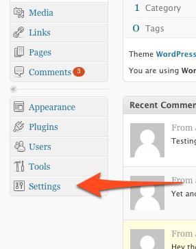
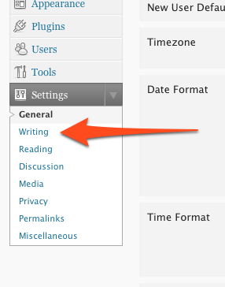
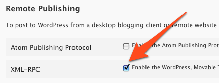
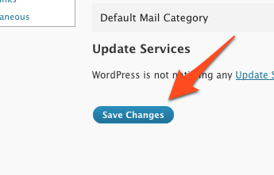

Wordpress Notifier for Mac OS X
Enable XML-RPC in Wordpress 2.7
For Wordpress Notifier to work XML-RPC needs to be enabled. This tutorial shows you how to do this in Wordpress 2.7.
Step 1:
Login into the Admin Dashboard and click on the "Settings" menu item.

Step 2:
Now click on the "Writing" menu item.

Step 3:
Under the heading "Remote Publishing" make sure that the "XML-RPC" tickbox is checked.

Step 4:
Scroll down the page and click the "Save Changes" button.

Step 5:
Well done! XML-RPC is now enabled and your blog now can interface with Wordpress Notifier.